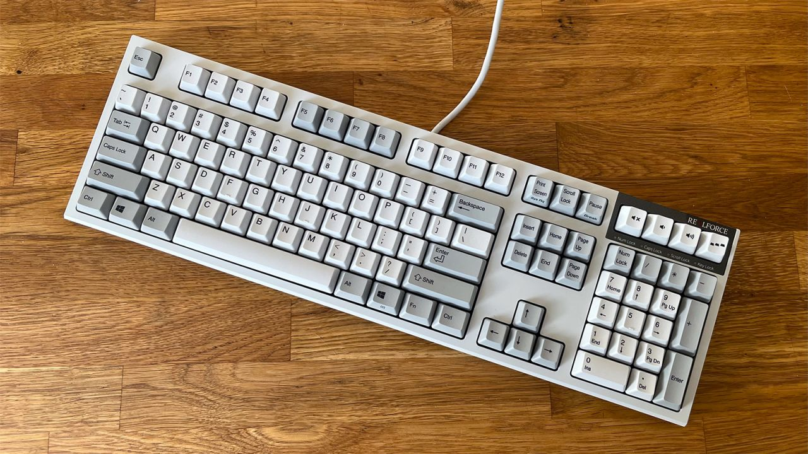
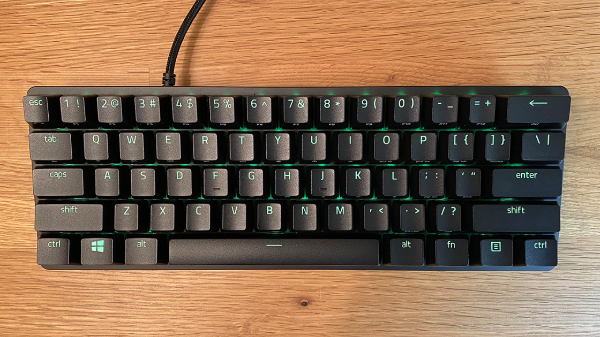
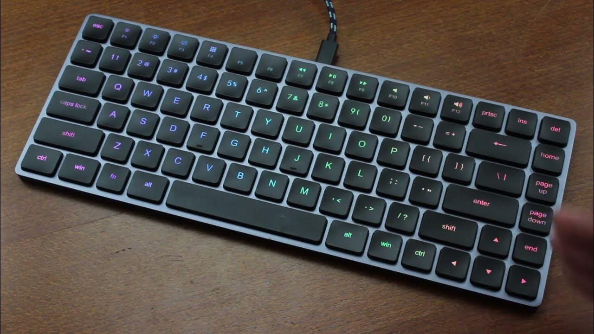
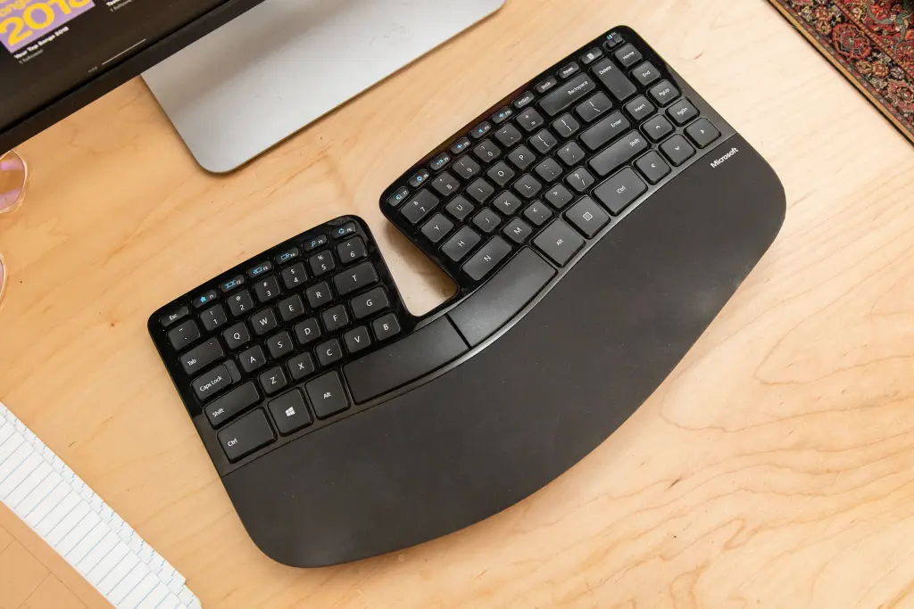

A Comprehensive Guide to Keyboard Sizes: Finding the Perfect Fit
Keyboards come in a variety of sizes, each catering to different needs and preferences. From the compact and portable to the full-sized and ergonomic, the keyboard market offers a multitude of options. In this article, we'll explore the various keyboard sizes available and help you choose the perfect fit for your specific requirements.
1. Full-sized Keyboards
Size: Standard layout with a width of approximately 17-18 inches and a depth of 6-8 inches.
Full-sized keyboards are the most common and traditional type of keyboard. They feature the familiar layout with a full set of keys, including the alphanumeric keys, function row, navigation cluster, and a numeric keypad on the right side. These keyboards are excellent for general-purpose computing tasks, including typing documents, coding, and data entry.
Pros:
- Familiar layout with all essential keys.
- Ideal for touch typists.
- Numeric keypad for efficient data input.
- Suitable for long typing sessions.
Cons:
- Bulky and less portable.
- Takes up more desk space.
2. Tenkeyless (TKL) Keyboards
Size: Slightly smaller than full-sized keyboards, typically around 14-15 inches in width.
Tenkeyless keyboards, as the name suggests, eliminate the numeric keypad found on full-sized keyboards. This reduction in size makes them more compact and portable while retaining the essential keys for typing and gaming. TKL keyboards are popular among gamers for their compact design, which allows for more mouse movement space.

Pros:
- Compact and portable.
- Ideal for gamers and minimalists.
- More desk space for mouse movement.
- Lightweight and easy to carry.
Cons:
- Lack of numeric keypad may be inconvenient for some users.
3. 60% Keyboards
Size: Approximately 11-12 inches in width.
60% keyboards are the ultimate in compactness. They retain only the essential alphanumeric keys, punctuation keys, and a few function keys. These keyboards are ideal for those who value portability and desk space savings above all else. They often require users to access additional functions through key combinations, making them a favorite among programmers and those who prioritize efficiency.
Pros:
- Extremely compact and portable.
- Minimalist design.
- Great for programmers and on-the-go professionals.
- Can be customized with keycaps and layouts.
Cons:
- Limited functionality due to the absence of many keys.
- Not suitable for heavy data input or complex gaming.
4. Compact Keyboards
Size: Between TKL and 60%, offering a balance between size and functionality.
Compact keyboards aim to strike a balance between the portability of 60% keyboards and the functionality of TKL keyboards. They retain most essential keys while omitting the numeric keypad and some function keys. Compact keyboards are a versatile choice for users who want a smaller footprint without sacrificing too much functionality.
Pros:
- Balance between size and functionality.
- Suitable for both typing and gaming.
- More desk space compared to full-sized keyboards.
- Enhanced portability.
Cons:
- Not as compact as 60% keyboards.
- Some key combinations may be needed for less common functions.
5. Ergonomic Keyboards
Size: Varies, but often larger than standard keyboards due to unique ergonomic shapes.
Ergonomic keyboards come in various shapes and sizes, designed to reduce strain and discomfort during extended typing sessions. They may have split designs, contoured key layouts, or adjustable angles to promote a more natural typing posture. These keyboards are ideal for individuals with repetitive strain injuries or those who prioritize ergonomic health.
Pros:
- Promotes better typing posture and reduces strain.
- Customized layouts for comfort.
- Ideal for people with wrist or hand issues.
- Some models offer wireless options for increased flexibility.
Cons:
- Can be bulkier and less portable.
- May have a steeper learning curve for newcomers.
Conclusion
The choice of keyboard size depends on your specific needs and preferences. Whether you're a gamer, a programmer, a writer, or someone who values ergonomic comfort, there's a keyboard size designed just for you. Consider your primary use case, desk space, and portability requirements when making your decision. With the right keyboard size, you can enhance your productivity and typing experience.